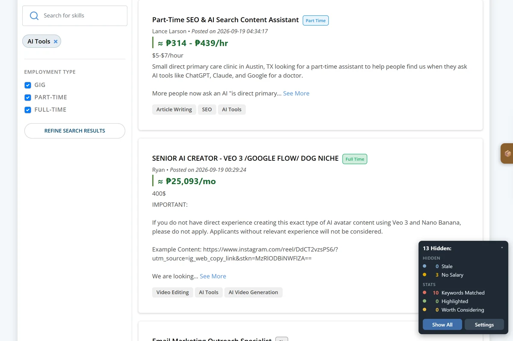
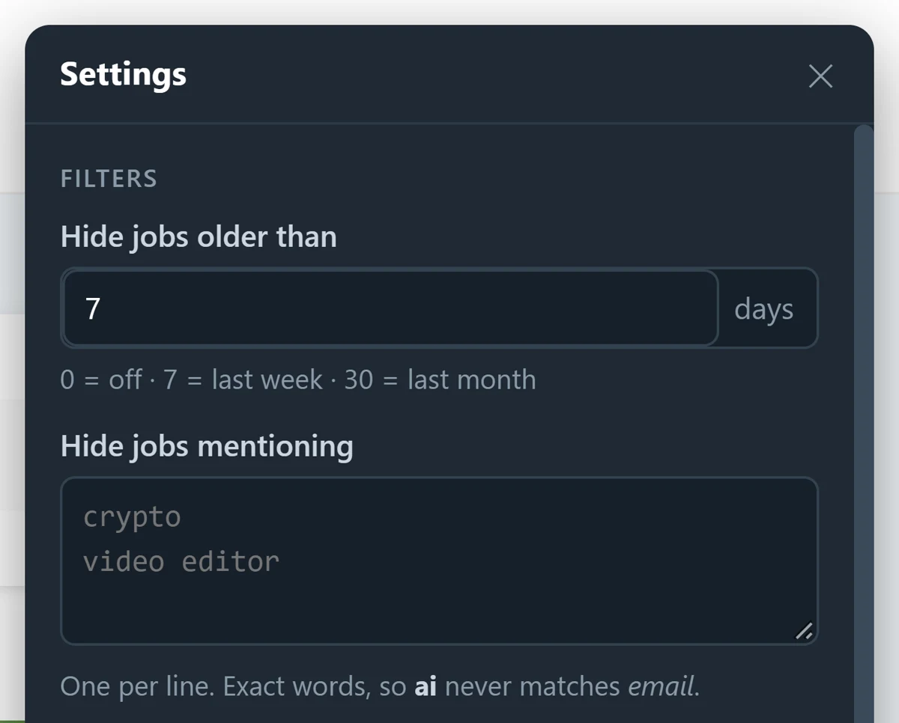
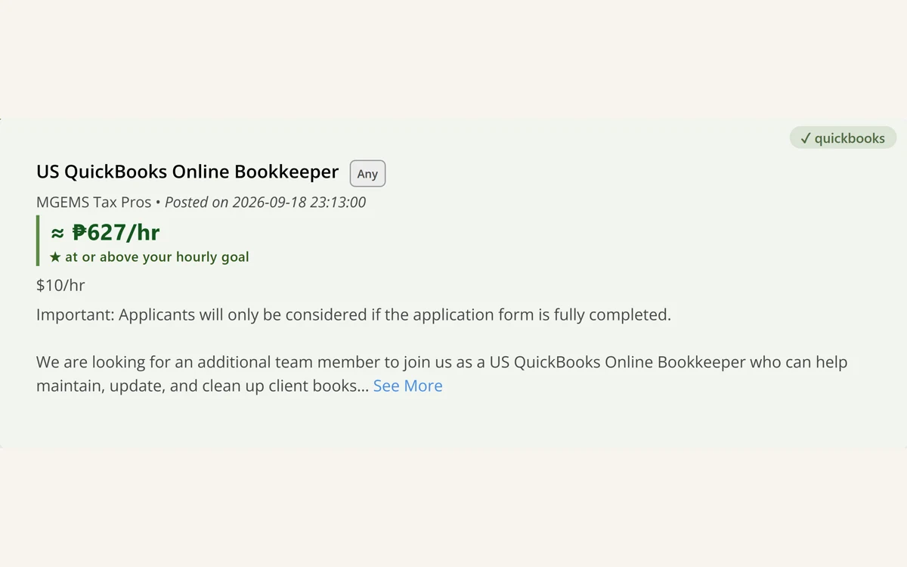

OJ.ph Cleaner
Yes — this is how your listing got read. I built the filter the job board doesn't ship to solve my own hunt, and it is still what I screen with.
Problem
- The board hands you a list and no filter — pay, freshness and the kind of work aren’t fields: they’re free text on the card, or buried in the description you have to open
- Salary is incomparable —
5.5$/hr,Php 1000/day,15-20 AUD per hourandTBDsit side by side - Staleness is invisible until you’re pages deep: a 297-job search ran 40–46 days old
- The board remembers nothing — every screening judgement gets paid for again tomorrow
- Screening effort scales with how much the market posted, not with how good your match is
Fix
- A filter the board doesn’t ship: a recency window first, then a salary digit check, then your keywords
- Negative keywords hide; positive keywords highlight and never hide — a job with a hated keyword that still pays well shows in yellow to reconsider
- Keywords are exact words or phrases, not substrings —
AImatchesAI tools, neveremail - Salaries converted to comparable figures at live ECB rates — never guessed
Scanopens each listing and re-decides it against its full description — two at a time, capped, cached for 7 days so changing a keyword costs no requests- One page appended per scroll — eight Next clicks, gone
Impact
- Screening effort stops scaling with market volume
- Every mark on the page names its reason — a filter you can’t audit is one you stop trusting
- An earlier version demoted off-platform listings and moved 176 of 227 out of High yield — a filter that had stopped filtering. Now pay decides, and a keyword only decorates
- It refuses to guess: a part-time hourly rate with no stated hours keeps its hourly figure, and the 40 h/week assumption is printed on the card



40–46 dStaleness found deep in results
3Outcomes: hide / highlight / reconsider
1 reqPer scroll, throttled
Chrome MV3JavaScriptLive FX ratesCDP test harness
View the code